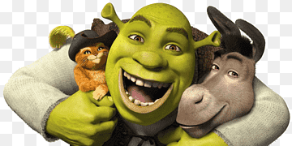
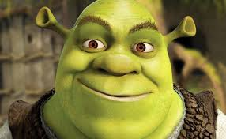

Войтите в свой аккаунт или зарегистрируйтесь.
Shrekopedia
Меню
Мультьфильмы
Игры
Персонажи
Викторины
нажми на картинку


Заглавная
Добро пожаловать в Болото ШрекаВикипедии!
Сайт о фильмах и играх о Шреке. Здесь вы сможете найти фильмы и игры о Шреке и его друзьях.